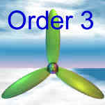
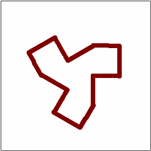
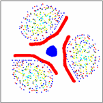
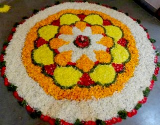
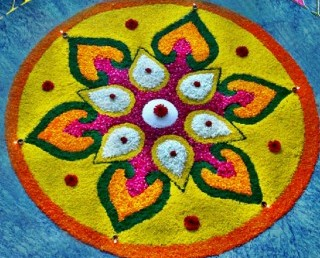

Symmetry
Symmetry is when a shape or object looks exactly the same after a certain move, such as a flip, slide or turn.
Reflection Symmetry
The simplest symmetry is Reflection Symmetry (sometimes called Line Symmetry or Mirror Symmetry). It is easy to see, because one half is the reflection of the other half.
 |
Here my dog "Flame" has her face The white line down the center is the |
The reflection in this lake also has symmetry, but in this case:
- the Line of Symmetry runs left-to-right
- it isn't perfect symmetry, as the image is changed a little by the lake surface
The Line of Symmetry can be in any direction (not just up-down or left-right). To learn more, go to Reflection Symmetry.
Look around the room: how many things can you find with reflection symmetry?
Rotational Symmetry
With Rotational Symmetry, the image can be rotated (around a central point) and fits on itself 2 or more times in a full turn (360°).
How many times it fits is called the Order of the symmetry.
Here are some examples (made using Symmetry Artist, and you can try it yourself!)
| Order | Example Shape | Artwork |
|---|---|---|
 |
 |
 |
 |
 |
 |
| ... and there's Order 4, 5, and so on ... | ||
Point Symmetry

Point Symmetry is when every part has a matching part:
- the same distance from the central point
- but in the opposite direction (across the point)
This is the same as turning the shape 180° (a half turn) and getting the same shape again.
So point symmetry is the same as "Rotational Symmetry of Order 2" above.
Art
Symmetry is often in art, for example Rangoli is a type of art common in India:

